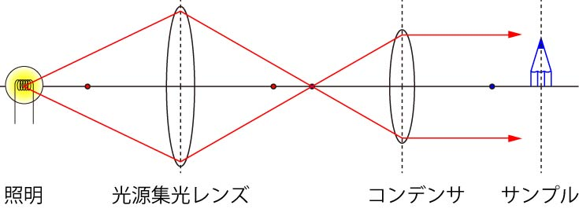
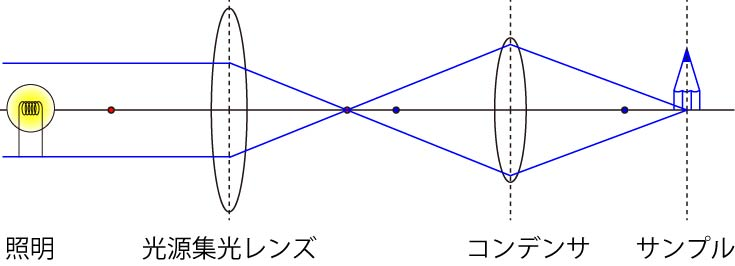

さて，簡単のため，サンプルから右側，対物レンズ以降を全部省略しちゃいましょう．
そして，光源とサンプルの間に，もう一枚レンズを挿入しましょう．
先に説明した，共役点，を考えれば問題ありませんね．

ここで，赤い点が光源集光レンズの焦点，青い点がコンデンサの集光点です．
ここで重要なのが，
光源集光レンズによって集光された点とコンデンサの焦点とが一致する
というものです．
そのおかげで，照明の光はサンプルに平行に当たります．
また，その点は，照明の共役点となります．
つまり，この位置に照明を置いても同じ役目を果たします（倍率は違いますが）．
さて，今度はサンプルに集光する光の軌跡はどうなるのでしょう？
そのためには，サンプルに光源があると仮定して，考えればいいのですね．

ここでも重要な点は，
サンプルから発せられた光がコンデンサにより集光する
その点は，光源集光レンズの焦点と一致する
です．
上に比べたらそれほど重要ではないかも知れませんが．．．．
さて，本当の重要な点は．．．．次のページへ．．